SONAR · MEMECOINIDostop samo za prijavljene. Ena prijava za vse foqs. aplikacije.
Vpiši novo geslo za svoj račun (vsaj 6 znakov).

SONAR · MEMECOINIDostop samo za prijavljene. Ena prijava za vse foqs. aplikacije.
Vpiši novo geslo za svoj račun (vsaj 6 znakov).
Prikaže se namesto e-pošte, tu in v vseh foqs. aplikacijah.
Omejen izbor najnovejših profilov DEX Screener · osvežitev na 30 s
Za prepoznavanje vzorca potrebujemo 16 zaporednih posnetkov.
Kako se posel odpre, kako se zapre in kaj odštejemo: .
Kaj bot ta hip drži, kaj čaka in kaj samo opazuje. Živi posnetki, brez vaj.
Vstopiš lahko tudi brez botovega signala. Kako se izstopa in kaj odštejemo: .
| Kovanec | Stanje | Starost | MC | Likvidnost | Promet 5 min | Nakupi / prodaje | 1 h |
|---|
Živi demo · vaje so izključene · zaključki v izbranem obdobju
Spremljanje zahteva odprto stran, zagnan strežnik in buden računalnik.
Zapisi so shranjeni v tem brskalniku. Vaja in živi posnetki so označeni ločeno. Nobenih vnaprej dodanih zmag.
| Kovanec / vir | Čas / razlog | Vstop → izstop USD | Stanje / neto SOL / donos % | Dejanje |
|---|
Odprte posle spremljamo samo ob odprti strani. Ob prekinitvi se zapis izloči v evidenco izgube podatkov; poznejšega izstopa ne ugibamo.
Različice pravil tečejo na strežniku vzporedno, na istih posnetkih in brez pravega denarja. Ustavljene (v2.0, v2.0 brez holderjev, v2.1 preboj, v2.2 dip široko, v1.2 Srednje, v1.0 čisto) ne odpirajo novih poslov, njihova zgodovina ostane v tabeli. Vsak posel 0,07 SOL. Stroški so od 20. 9. izmerjeni, ne več ocenjeni: 0,25 % provizije bazena in 0,1 % vpliva na ceno na vsaki strani ter 0,0002 SOL omrežnine, skupaj približno 1 % na cel posel. Tega ne poganja tvoj brskalnik: teče tudi, ko je stran zaprta.
| Pravila | Posli zakl. / odprti | Dobitki | Povp. dobiček | Povp. izguba | Faktor dobička | Pričakovanje na posel | Neto SOL | Največji padec | Rug / vrzel | Kriteriji |
|---|
★ v1.2 Jupiter, cilj +30 · od 25. 9. Vstop kot v1.2, a po Jupitrovi ceni, izstop po Jupitrovih cenah na 6 s. Pol pri +20 %, vse pri +30 % namesto +50 %, sled 15 %, trda meja -12 %. v1.2 Jupiter, cilj +50 je enaka kontrola s ciljem +50, zato razlika med njima meri samo višino cilja. Ozadje: obrat-research.md.
v1.0 · stara pravila: vzorci Odboj, Višje dno in Preboj/retest, fiksni cilj +10 %, meja -5 %.
v1.0 čisto · od 21. 9. Enako kot v1.0, a ne upošteva sumljivih posnetkov: kadar se cena z DEX Screenerja od Jupitrove razlikuje za več kot polovico (brez Jupitra: skok za več kot 3-krat), na tem posnetku ne vstopi in ne izstopi, par z dvema takima posnetkoma v 22 minutah pa izpusti. Proti v1.0 pove, koliko stanejo napačni podatki.
v1.0 Jupiter · od 21. 9. Enako kot v1.0 čisto, a vstopi po Jupitrovi ceni in izstopa po Jupitrovih cenah, ki jih beremo na 6 sekund namesto na 30. Proti v1.0 čisto pove, koliko prinese hitrejša cena.
v1.2 · to, kar zdaj teče v aplikaciji: isti vzorci + filter vstopov (par star 30 do 90 min, v zadnji uri ni v minusu, MC 20K do 300K) + izstop profila Srednje (pol pri +25 %, sledilna meja 20 % pod vrhom, trda meja -12 %). Do 20. 9. je senca temu računala 4,9 % stroškov na posel, aplikacija pa 3 %; obe številki sta bili previsoki, zato so starejši zaključki v tabeli slabši od resničnih.
v2.0 · ožji izbor kovancev (starost 5 do 90 min, MC 8K do 80K $, likvidnost vsaj 15 % MC, več nakupov kot prodaj), vstop ob vrnitvi po padcu 35 do 55 %, pol prodaje pri +25 %, sledilna meja 20 % pod vrhom, rug izhod, preverjanje imetnikov.
v2.0 brez holderjev · enako kot v2.0, samo brez preverjanja imetnikov. Pokaže, ali preverjanje sploh kaj pomaga.
v2.1 preboj · isti izbor kot v2.0, vstop ob preboju 15-minutnega vrha ob močnih nakupih.
v2.2 dip s kupci · od 19. 9. Isti dip vstop kot v2.0 (run +40 %, dip 35 do 55 %, dno drži 60 s, odboj vsaj +4 %), brez dveh tihih pogojev, ki sta v2.0 pošiljala v prvo zeleno svečko (zgornja meja odboja 12 % in "zadnji posnetek višji od prejšnjega"). Cena ostane v dip coni (največ 65 % vrha). Nakupi/prodaje v 5 min vsaj 2,0 in vsaj 10 nakupov, MC 8K do 80K $, likvidnost vsaj 10K, brez omejitve starosti. Isti izstop kot v2.0. Na 36 urah posnetkov (17. do 18. 9.): 44 poslov, +25 % pred -12 % v 57 %, +6,4 % na posel po stroških. Senca pove, ali to drži.
v2.2 dip s kupci, široko · enako, samo brez MC filtra. Dvakrat več poslov. Pokaže, ali MC 8K do 80K res šteje ali je bil naključje.
Lestvica ciljev · od 20. 9. Pet pravil z istim vstopom kot v1.2 in različnim ciljem, da se vidi, katera višina cilja se obnese. cilj +10 % ima geometrijo v1.0 (proda vse pri +10 %, meja -5 %, brez delne prodaje) in obenem pove, koliko škodi filter vstopov, če ga primerjaš z v1.0. cilj +50 % je to, kar je zdaj v aplikaciji. cilj +70 % in cilj +100 % sta enaka, samo z višjim ciljem. sled 7 % ima cilj +50 %, a tesnejšo sled, ker je sled 15 % pri poslih, ki cilja ne dosežejo, vrnila velik del vrha. Replika nazaj pravi, da je višji cilj slabši, ker delež zadetkov pada hitreje, kot raste izplačilo. Senca pove, ali to drži tudi naprej.
v3 mirno · od 20. 9. Nasprotje vsega prejšnjega: vstopi takrat, ko se ni nič zgodilo. Premik v 5 minutah med -3 in +3 %, v uri med -20 in +30 %, likvidnost vsaj 20K, vsaj 5 nakupov v 5 minutah. Izstop je preprost: cilj +25 %, trda meja -12 %, časovna meja 120 minut.
v3 kontrola · od 20. 9. Vstopa naključno v iste kovance, z enakim izstopom kot v3 mirno. Ni strategija, ampak merilo. Vsako drugo pravilo se odslej sodi proti tej črti, ne proti ničli: če pravilo ne premaga naključja, ne zna ničesar.
Pravila so med testom zamrznjena. Spremenimo jih šele po koncu obdobja, sicer rezultati niso primerljivi.
| Odprt | Pravila | Kovanec | Vstop MC | Vrh | Izhod | Neto |
|---|
Sonar posluša trg Solana memecoinov, iz posnetkov cene sestavi sliko in pove, kdaj bi bot vstopil in kdaj izstopil. Vse je demo: ni denarnice, ni pravih naročil, noben posel se ne odda na borzo.
Senca je sopotnik z beležko. Sedi zraven, gleda iste posnetke kot bot in si zapisuje: tu bi vstopil, tu bi izstopil, toliko bi zaslužil ali izgubil. Volana se ne dotakne nikoli. Ko se čez dovolj zapisov pokaže, da je njegova beležka v plusu, njegovo pravilo prestavimo v bota. Dokler se to ne zgodi, senca ne stane nič in ne more ničesar pokvariti.
Pravilo gre iz sence v aplikacijo šele, ko ima vsaj 100 zaključenih poslov ali pa 14 dni in vsaj 30 poslov, ob tem faktor dobička nad 1,3 in pričakovanje nad +2 % na posel. Vsa pravila tečejo na istih posnetkih hkrati, zato so med seboj primerljiva.
Vstop je lahko tvoj, s klikom na Vstopi, ali botov, če so v piluli BOT vklopljeni samodejni vstopi. Cena vstopa je cena, ki je bila v tistem trenutku prikazana. Izstop vodi profil izstopa, ki ga izbereš pred vstopom: Varen, Srednje ali Agresivno. Posel obdrži profil, s katerim je bil odprt, tudi če ga pozneje zamenjaš.
Izstopimo ob prvi naslednji opaženi ceni čez mejo. Ker beremo posnetke na 30 sekund, se cena med dvema posnetkoma lahko premakne čez mejo in nazaj; takrat je izvršitev slabša od meje. Tega ne ugibamo, ampak zapišemo tako, kot se je zgodilo, zato so vrzeli pogost razlog za večjo izgubo od nastavljene.
Hkrati je odprtih največ 5 poslov. Če je stran zaprta ali podatki niso sveži, se posel označi kot prekinjen in se izloči iz uspešnosti, ker njegovega izida ne poznamo.
Na vsaki strani posla 0,25 % provizije bazena in 0,1 % vpliva na ceno, dodatno skupaj 0,0002 SOL omrežnine s prioriteto. To je približno 1 % na cel posel. Do 20. 9. 2026 smo računali 1 % zdrsa in 0,5 % provizije na stran; vpliv na ceno smo takrat ocenili, zdaj je izmerjen na 424 naših poslih iz shranjene likvidnosti (mediana 0,054 %, p90 0,083 %). Že zaključeni posli obdržijo stari izračun, novi dobijo tega. Vsaka številka v aplikaciji je neto, torej po teh stroških. Znesek v USD je približek ob nespremenjeni vrednosti SOL/USD, tečaj vneseš ročno v Bilanci. Dejanskih izvršitev in prodajljivosti posameznega kovanca ne preverjamo.
Sonar samodejno pridobi do 25 Solana profilov iz javnega izbora DEX Screener in za vsakega izbere najbolj likviden razpoložljiv par. To niso vsi novi kovanci. Čas nastanka para ni čas nastanka kovanca; faz New Pairs, Final Stretch in Migrated ne določamo.
Cene, likvidnost in petminutni promet so podatki ponudnika in njihova dejanska zakasnitev ni zajamčena. Osvežujemo na 30 sekund; po 75 sekundah brez odgovora ali ob napaki signale ustavimo. Sveče in podatki o posameznih poslih niso povezani, črtni graf kaže samo naše posnetke.
DEX Screener vsak odgovor predpomni 30 sekund, zato se cena pri njem spremeni vsakih 32 sekund (izmerjeno 21. 9.). Od 21. 9. zbiralec vsakih 6 sekund bere še Jupitrovo ceno, ki jo Jupiter računa iz zadnje menjave, in z njo preveri vsak posnetek. Posnetek, kjer se vira razlikujeta za več kot polovico, je označen kot sumljiv in ga aplikacija ne upošteva.
Zbiranje teče na strežniku vsakih 30 sekund, tudi ko je stran zaprta. Tvoji demo posli pa se vodijo v brskalniku, zato jih spremljamo samo, dokler je stran odprta.
Odboj: dotik območja ±2 % okoli najmanjše od prvih desetih cen in rast vsaj 1,5 %. Višje dno: dva lokalna minimuma, drugi vsaj 1 % višji, nato rast vsaj 1 %. Preboj in retest: preboj starega maksimuma za 2,5 %, vrnitev v območje −1 % do +2 % in rast za 1 %. Uporabimo zadnjih 16 posnetkov, najmanj 10.000 USD likvidnosti in pozitiven promet. Pragovi so poskusni in niso preverjena strategija; kaj bi jih zamenjalo, se meri v Laboratoriju.
Ne napove, kateri kovanec bo zrasel, in ne pozna prevar ali zaprtih prodaj. Ne vidi verige neposredno, ampak samo to, kar poroča ponudnik podatkov. Ne izvede nobenega naročila in nima dostopa do denarnice.
Aplikacija ne potrebuje naročnine, plugina ali ključa. Birdeye ni povezan. Njegov Standard je brezplačen z omejenim dostopom; uradni cenik navaja Lite 39 USD, Starter 99 USD in Premium 199 USD na mesec, z možnimi doplačili. Premium vključuje WebSocket. Popolna pokritost novih izdaj in faz pred migracijo ni preverjena.
Preverjeno 15. 9. 2026: DEX Screener API · Birdeye cenik · Birdeye sveče